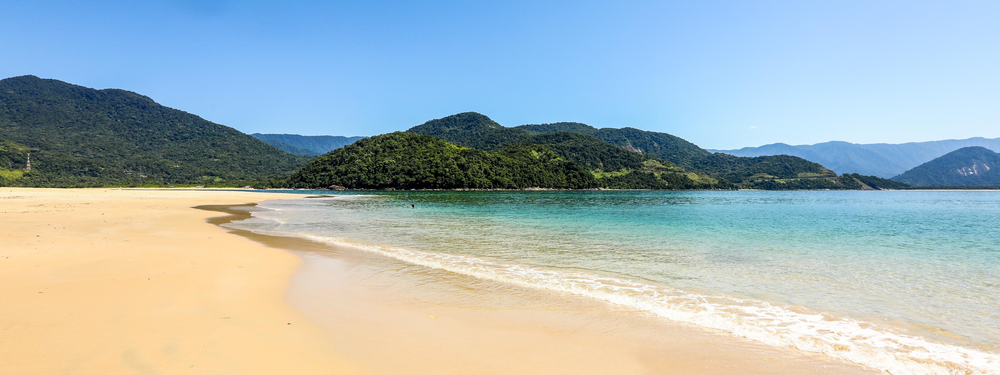

HOME
Jericoacoara
Ubatuba
Camocim
Praia do Forno
Praia dos Carneiros
Cuidados No verão
Cuidados com as Crianças
Pacotes de Viagens
Criadores
Praias do Brasilüåä
O Brasil é um dos países tropicais conhecidos pelas mais bonitas do planeta. Confira as melhores praias para esse verão.
Jericoacoara
Jericoacoara é uma praia localizada na vila homônima, no município de Jijoca de Jericoacoara, no estado do Ceará, no Brasil. Está localizada a 295 km a oeste da capital do estado, Fortaleza. Foi eleita em 1994 pelo jornal estadunidense The Washington Post uma das dez praias mais bonitas do planeta.Em 2014 , foi eleita pelo Huffington Post a quarta melhor praia da Terra.É um dos locais mais frequentados por praticantes de windsurfe no país. A praia é parte integrante do Parque Nacional de Jericoacoara.
Atrações:
Pedra furada
Duna do pôr do sol
Igreja Nossa Senhora da ConsolÇão
Serrote
Farol de Jericoacoara
Campo das dunas
Ubatuba

O Brasil tem muitas praias lindas e paradisíacas e algumas delas ficam no litoral norte de São Paulo . Visitamos algumas dessas praias e criamos uma lista com 12 praias incríveis em Ubatuba. Tem praia para todos os gostos, praias desertas e sem estrutura de quiosque para curtir e contemplar a natureza, praia com águas rasas para ir com criança, praia com ondas mais fortes e também sem ondas.
Ubatuba fica no litoral norte do estado de São Paulo, a aproximadamente 225km da capital paulista. Possui mais de 100 praias em seu litoral, indo desde Caraguatatuba no Sul até Paraty (Rio de Janeiro ) no norte.
Conhecer as praias de Ubatuba é uma ótima opção pra curtir o verão ou até mesmo para aproveitar um fim de semana, pois são praias lindas e muito próximas de São Paulo . Confira a lista abaixo e ótimo passeio.
Atrações
Centro Histórico de Ubatuba
Parque Estadual da Ilha Anchieta
Projeto Tartarugas Marinhas- Projeto Tamar
Mirante entre praias
Farol da Barra
Camocim
A área na qual Camocim localiza-se é um território de uma rica história de intercâmbio e conflitos entre povos. Os primeiros habitantes foram os indígenas de várias etnias, tais como os Tremembés, Tabajaras, Juremas, Jenipaboaçus e Cambidas.
Os portugueses chegaram a partir da segunda metade do Século XVI, com diversos intuitos: um reconhecimento completo da região a partir de Tutóia no Maranhão aos limites finais entre Ceará e Rio Grande do Norte (a barra do rio Camocim, por exemplo, foi cartografada com o nome de Rio da Cruz); Como base de apoio para a ocupação do litoral, bem como base de apoio para confrontos militares com os franceses que ocupavam o Maranhão. Deste momento histórico existem várias cartas topográficas datadas dos séculos XVII. Por exemplo: em 1604, Pero Coelho de Souza passou nestas bandas com rumo a Ibiapaba e as batalhas no Maranhão.
Depois da segunda metade do século XVII, surge o projeto de construir o Forte em Camocim com a intenção de proteção dos ataques dos índios e dos piratas, porém este projeto não foi adiante. A Barra do Camocim como núcleo urbano vai consolidar-se com a transferência da Missão de Tabainha. Um empreendimento do padre Ascenço Gago, com o intuito de catequizar os Tremembés e outras etnias.
A partir de 1792, chegam a Barra do Camocim, famílias oriundas de Tutoia, as quais implementaram a agricultura e pecuária na região. Em 1868, foi criado o distrito policial e desta forma Camocim consolida-se como núcleo urbano.
E o que vai definitivamente consolidar Camocim como centro urbano e econômico é a construção da Estrada de Ferro de Sobral-Camocim a partir de 1879.
Atrações
Ilha do Amor
Passeio do Cavalo Marinho
Lago Grande
Barra dos Remédios
Praia do Xavier
Estuário do Rio Coreaú
Praia do Forno
A trilha escondida no final da Praia dos Anjos leva a um dos mais incríveis paraísos de Arraial do Cabo. O esforço da subida será rapidamente recompensado ao avistar o mirante que permite uma vista paradisíaca da cidade. A Praia do Forno é um dos principais cartões de Arraial do Cabo e não é para menos. O colorido da água na enseada e a faixa de areia branca cercada pela exuberante vegetação formam um cenário digno de muitas fotos.
O caminho até a praia só pode ser feito a pé ou de barco. A trilha, apesar de ter uma subida puxada, pode ser percorrida em menos de 20 minutos e sem grandes sacrifícios. Vale ficar atento às pedras, que em dias de chuva ficam escorregadias e tombos são frequentes. Ao terminar a subida, os visitantes se deparam com um mirante, onde um banquinho estrategicamente posicionado permite a apreciação da paisagem. Difícil sair de lá! Mas, por incrível que pareça, você será ainda mais feliz com os pés na areia. Quem preferir não enfrentar a trilha (ela é fácil, acredite) poderá ir de barco a partir da Praia dos Anjos. O custo é de R$ 10 por trecho.
A Praia do Forno tem aproximadamente 500 metros de extensão. A ponta direita é repleta de bares, carrinhos de comida, aluguel de caiaques e muita gente (especialmente nos finais de semana). Mas basta caminhar um pouco mais até o final da faixa de areia para poder curtir a Praia do Forno quase sem ninguém. Ela oferece um pedacinho de areia para quem gosta de agito e outro para os que preferem sossego.
A praia também atrai quem gosta de mergulho. Por lá, é possível praticar snorkeling e avistar muitas tartarugas. Existe até uma fazenda de ostras no lugar. A temperatura da água não está entre as mais frias de Arraial e será impossível resistir a um mergulho no mar colorido da Praia do Forno.
Entre os restaurantes, o destaque fica por conta do flutuante, de onde se pode praticar snorkeling e curtir deliciosos frutos do mar. Mas há também oferta de pequenos petiscos, como churrasquinho, açaí, pizza e até lasanha. A infraestrutura permite que se passe o dia inteiro curtindo sem precisar levar nada. Há banheiros (bem precários), pratos com frutos do mar e cerveja sempre gelada nos quiosques. Há também aluguel de cadeiras e barracas.
A Praia do Forno costuma ser a última parada dos barcos que vão para a Praia do Farol.
Atrações
Passeio de barco por Arraial do Cabo
Batismo de mergulho em Arraial do Cabo
Excursão a Búzios
Trilha pela praia do Forno e mirantes de Arraial do Cabo
Tour de buggy por Arubinha
Praia dos Carneiros
A Praia dos Carneiros, em Pernambuco, é reconhecida como uma das praias mais bonitas do Brasil e desperta o interesse de muitos viajantes por sua beleza natural. É o lugar perfeito para relaxar e curtir um cenário paradisíaco, cercado por um mar lindo, cheio de piscinas naturais. Estivemos em Carneiros recentemente, por isso vale conferir nossas dicas fresquinhas!
Atrações
Petiscar frutos do mar fresquinhos no restaurante Bora Bora
Visitar (e se encantar com) as piscinas naturais e os recifes
Caminhar pela areia até a charmosa Capela de São Benedito
Navegar de caiaque ou stand-up paddle por águas mornas e tranquilas
Praticar mergulho para descobrir as belezas da vida marinha
s
Cuidados no verão
Todos nós queremos curtir as férias de verão da melhor forma possível. Fique ligado e siga as dicas a seguir.
Use protetor solar com fator de proteção adequado (FPS 30 ou mais) e reaplique a cada 2 horas , especialmente após entrar na água. A exposição prolongada ao sol pode causar queimaduras, envelhecimento precoce e aumentar o risco de câncer de pele .
Beba bastante água para manter-se hidratado, já que o calor intenso pode levar à desidratação . Evite consumir apenas bebidas alcoólicas, pois elas podem acelerar a desidratação.
Algumas praias possuem correntes fortes que podem arrastar nadadores para o mar aberto. Fique atento às bandeiras de sinalização e sempre nade em áreas supervisionadas por salva-vidas .
Evite o sol entre 10h e 16h , quando os raios ultravioleta (UV) são mais intensos. Se estiver na praia nesse período, busque sombra e use acessórios de proteção, como chapéus, óculos escuros e roupas leves.
Coma alimentos leves e frescos. Evite comidas de origem duvidosa ou mal conservadas, pois o calor pode acelerar a deterioração e causar intoxicações alimentares.
Esses cuidados garantem maior segurança e conforto durante os dias de praia no verão.
Esses cuidados garantem maior segurança e conforto, durante os dias de praia no verão.
VIDEO
Cuidado com as crianças
Levar as crianças para a praia no verão é uma ótima maneira de aproveitar o sol e o mar, mas é importante seguir alguns cuidados para garantir a segurança e o bem-estar dos pequenos:
Na parte da manhã 10:00 tarde 16:00
Cuidado para que elas não vá para o mar sozinha
Atenção para que elas não se percam
Pacotes de Viagens
Abaixo trazemos sugestões de principais empresas para comprar seu pacote de viagens. Lembre-se verifique antes a reputação da empresa. Não nos responsabilizamos por golpes! Reserve sua viagem com antecdência e economize.
Clique nos ícones e confira as promoções!
>
Este site foi produzido por alunos do Curso de Desenvolvimento JS do SENAI. Abaixo está a localização da unidade em que ocorreu o surso.
" frameborder="0">